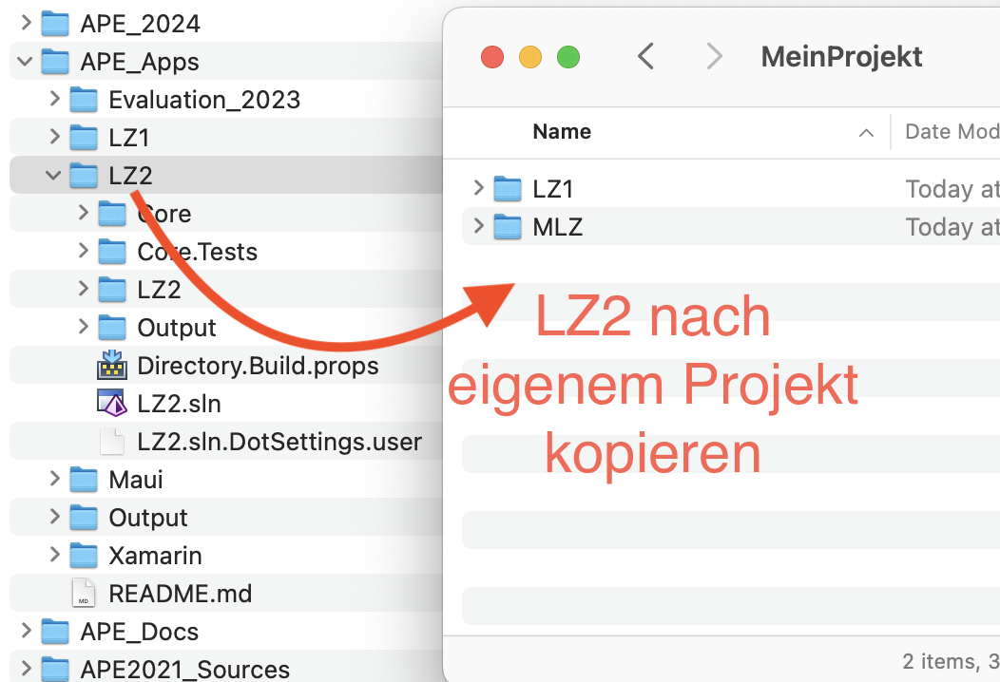

LZK2; Projektarbeit
async, SQLite und HTTP Clienthttps://github.com/mvonballmo/APE_Apps pullen oder klonen.master branch auschecken.LZ2 nach eigenem Projektordner kopieren.LZ2/LZ2.sln im eigenen Projekt in Visual Studio oder Rider öffnen.
Readme.md anschauen und lösen.Was haben wir über Mobile-App Entwicklung gelernt?
Was haben wir über Maui gelernt?
Was haben wir generell gelernt?
async/await)Kamera, Mikrofon, Neigungssensor, Animationen, usw.
AnimationBehaviorIContacts)